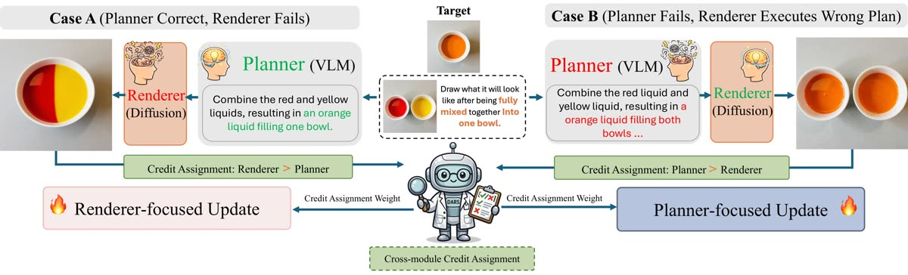
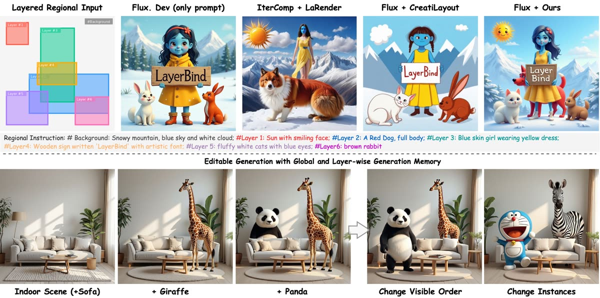
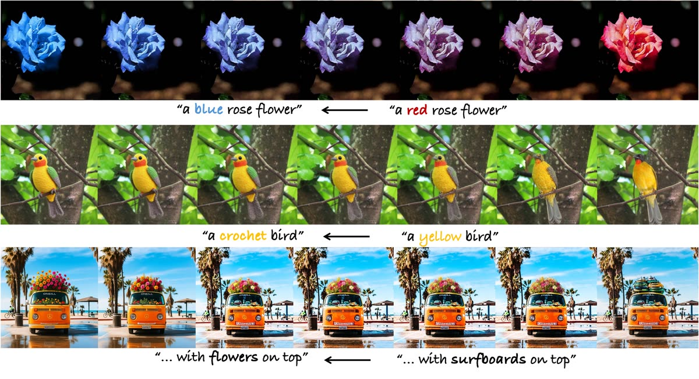
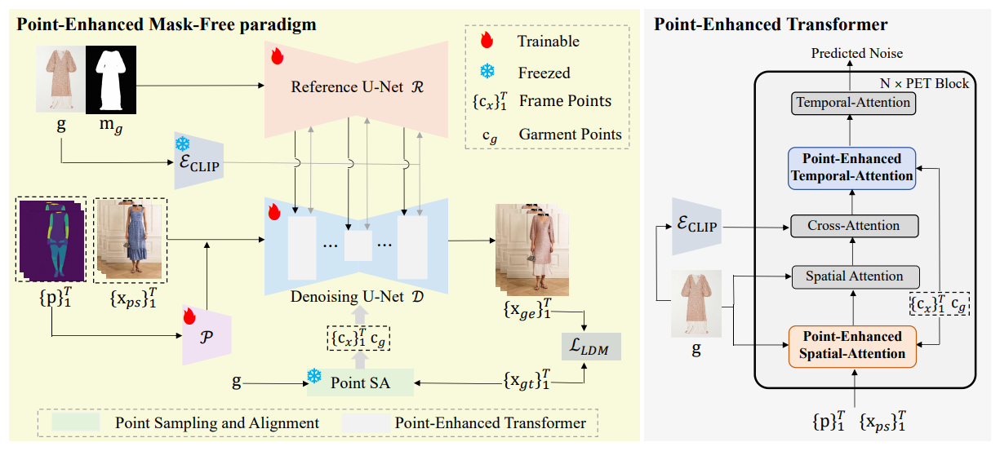
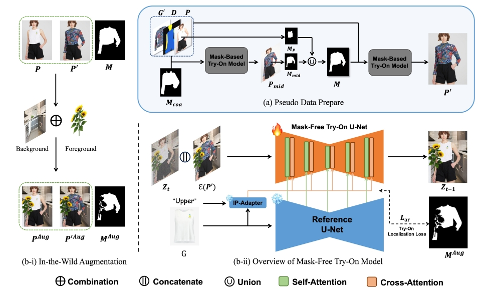
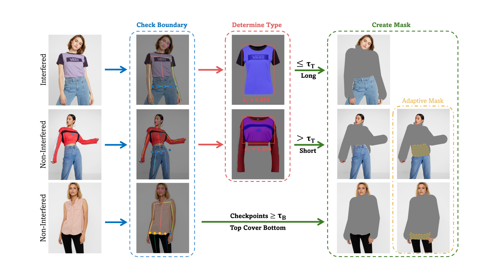
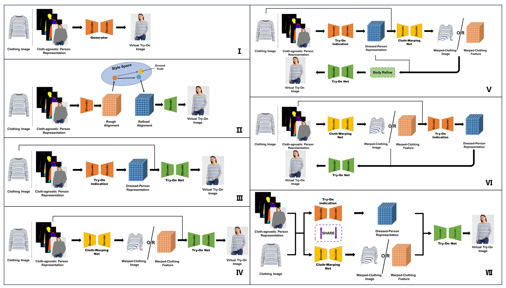

Kling AI Research
Research Intern
2026.07 – Present
Tianjin University
I am currently pursuing a Ph.D. at Tianjin University and expect to graduate in 2029. I received my M.S. degree in computer vision from Tianjin University, advised by Prof. Dan Song, and my B.S. degree in Electronic Information from Hebei University of Technology, where I worked with Prof. Zhenxv Bai.
My research interests lie in visual content generation, with a current focus on video models and world models. Previously, I worked on image generation, image editing, and virtual try-on.
I am currently a research intern at Kling AI Research. Before that, I interned at Kuaishou Technology until July 2026 and at Alibaba in 2024.
Updates
Background
Research Intern
2026.07 – Present
Research Intern
2025 – 2026.07

Research Intern
2024
Ph.D. Student · Expected 2029
M.S. in Computer Vision · 2022–2025
Selected work

ACM International Conference on Multimedia (ACM MM), 2026

IEEE/CVF Conference on Computer Vision and Pattern Recognition (CVPR), 2026 · Poster

IEEE/CVF Conference on Computer Vision and Pattern Recognition Findings (CVPR Findings), 2026
IEEE/CVF Conference on Computer Vision and Pattern Recognition Findings (CVPR Findings), 2026

IEEE Transactions on Consumer Electronics (TCE), 2026

IEEE/CVF Conference on Computer Vision and Pattern Recognition (CVPR), 2025

IEEE Transactions on Circuits and Systems for Video Technology (TCSVT)

International Journal of Computer Vision (IJCV), 2024